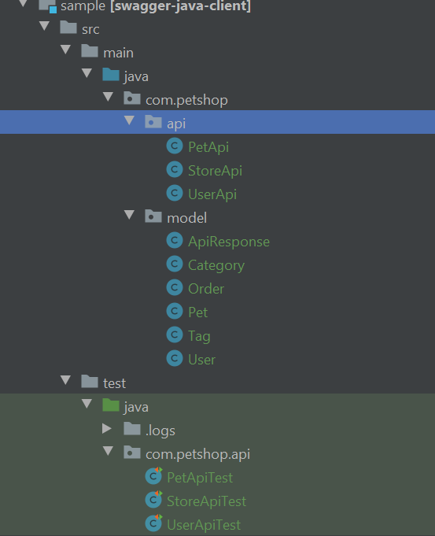
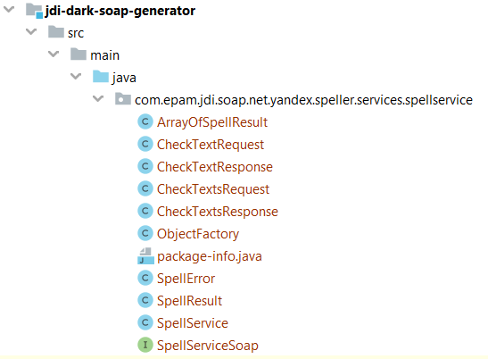

JDI Dark Framework
JDI Dark is a simple test automation framework for web service testing powered by REST Assured.
Highlights
- Obvious Service Object Model that helps to reduce test development effort and increase its speed
- REST and SOAP web service design support
- Extended capabilities of REST Assured framework with all its features kept
- Simple interface for sending requests and response analysis
- Automated service objects generation both for REST and SOAP
- Support of the BDD approach
- Retrying of failed tests with specified number of attempts
- Detailed logging of requests and responses in JSON format which can be used in your reports
Simple JDI Dark examples
1. Service Object Model
@ServiceDomain("http://httpbin.org/")
public class ServiceExample {
@GET("/get") RestMethod getInfo;
@POST("/post") RestMethod post;
@PUT("/put") RestMethod put;
@PATCH("/patch") RestMethod patch;
@DELETE("/delete") RestMethod delete;
}
JDI Dark provides capability to describe your API as a simple Service Object. That allows you to unify and combine your REST methods and endpoints in one class (similar to UI Page Object pattern).
Let's say we have a website for REST testing located at the following address: http://httpbin.org and we need to test some of its endpoints. We can create a Java class and describe the methods we want to test.
Isn't that simple?
2. Create simple test using Service Object
@Test
public void simpleRestTest() {
RestResponse resp = ServiceExample.getInfo.call();
resp.isOk().
body("url", equalTo("http://httpbin.org/get")).
body("headers.Host", equalTo("httpbin.org")).
body("headers.Id", equalTo("Test"));
resp.assertThat().header("Connection", "keep-alive");
}
Based on the Service Object class we created before, we can create a simple test to execute the HTTP GET method and validate the response body.
- Make a request call to the HTTP method described in your Service Object class.
- Validate the response body.
The HTTP GET method described in the service class is being called here. Next, the response is being validated.
You can check other tests by following the link:
3. Create tests without using Service Object
@Test
public void noServiceObjectTest(){
RestResponse resp = GET(requestData(
rd -> {rd.url="http://httpbin.org/get";
rd.headers=new MapArray<>(new Object[][]{
{"Name","Roman"},
{"Id","TestTest"}
});}
));
}
As it has been mentioned, you are still able to write tests without using Service Object model. It is possible to call HTTP methods directly from your tests. You just need to provide required information within method arguments.
In this test we are making an HTTP GET request with invoked request data containing URL and headers.
4. Query Parameters, Headers, Cookies support
@QueryParameter(name = "test", value = "test")
@GET("/get") RestMethod getInfo;
@QueryParameter(name = "param1", value = "test")
@QueryParameter(name = "param2", value = "test")
@GET("/get") RestMethod getInfo;
@Header(name = "Name", value = "Roman")
@Header(name = "Id", value = "Test")
@Cookie(name = "session_id", value = "1234")
@GET("/get") RestMethod getInfo;
JDI Dark has support for query parameters, you can specify them in your service class. You just need to use the @QueryParameter annotation in your method or service class description.
If you need to specify several query parameters, do it with the @QueryParameters annotation.
The same way you can specify headers and cookies. JDI Dark has a special annotation for them as well.
5. Performance testing support
@Test
public void simplePerformanceTest() {
PerformanceResult pr = loadService(3600, getInfo);
System.out.println("Average time: " + pr.AverageResponseTime + "ms");
System.out.println("Requests amount: " + pr.NumberOfRequests);
Assert.assertTrue(pr.NoFails(), "Number of fails: " + pr.NumberOfFails);
}
JDI Dark supports measuring request time.
You can call your service multiple times and get verbose results.
You can also load your service and analyse response time.
Tutorial
In this tutorial we’ll take a glance at JDI Dark, a library that simplifies test automation, makes test run results stable, predictable and easy to maintain.
- Quick Start - a short instruction on how to add JDI Dark to your project and perform its basic configuration.
- JDI Dark at a glance - a simple example for creating test cases for REST services with JDI Dark.
- JDI Dark Service Objects - a Service Object class description
- JDI Dark and Cucumber - a short instruction on how to create cucumber feature files with JDI Dark.
- JDI Dark and SOAP - a short instruction on how to create test cases for SOAP with JDI Dark.
1. Quick Start
Maven Dependencies
<dependency>
<groupId>com.epam.jdi</groupId>
<artifactId>jdi-dark</artifactId>
<version>{RELEASE}</version>
</dependency>
First, we need to add JDI Dark to the dependency section of our pom.xml file. The latest version can be found in the Maven Central Repository.
Configuration
For configuration project create test.properties file on path src/test/resources.
Let’s look at them:
domain=local=http://localhost:8080, trello=https://api.trello.com/1
log.level=WARNING
- domain - there is several options how specify domain:
- Specify one domain - domain=URI. Than you can use this setting in service domain annotation in this way: @ServiceDomain("${domain}"), @ServiceDomain("${nameDomain2}")
- Specify list of domains - domain=nameDomain=URI, nameDomain2=URI. Than you can use this variables in service domain annotation in this way: @ServiceDomain("${nameDomain}"), @ServiceDomain("${nameDomain2}")
- If you don't specify domain here, you must directly specify your base URI in this way @ServiceDomain("https://api.trello.com/1")
- log.level - you can set one of options - INFO, WARNING, OFF, FATAL, ERROR, STEP, DEBUG, TRACE, ALL
2. JDI Dark at a glance
//STEP 1 Creating class describing Board object with needed fields
public class Board {
private String id;
private String name;
public String getId() {return id;}
public void setId(String id) {this.id = id;}
public String getName() {return name;}
public void setName(String name) {this.name = name;}
}
//STEP 2 Creating class Service Object Model
@ServiceDomain("${trello}")
@QueryParameter(name = "key", value = "3445103a21ddca2619eaceb0e833d0db")
@QueryParameter(name = "token", value = "a9b951262e529821308e7ecbc3e4b7cfb14a24fef5ea500a68c69d374009fcc0")
public class TrelloService {
public static final String BOARDS = "/boards";
@ContentType(JSON)
@POST(BOARDS)
public static RestMethod<Board> boardsPost;
public static Board createBoard(Board board) {
return boardsPost.post(board, Board.class);
}
}
//STEP 3 Creating class for generating needed data
public class TrelloDataGenerator {
public static Board generateBoard() {
Board board = new Board();
board.setName("JDI Test Board number " + new Random().nextInt(Integer.MAX_VALUE));
return board;
}
}
//STEP 4 Creating test class
public class TrelloTests {
@BeforeClass
public void initService() {
init(TrelloService.class);
}
@Test
public void createCardInBoard() {
Board board = TrelloDataGenerator.generateBoard();
Board createdBoard = TrelloService.createBoard(board);
Board gotBoard = TrelloService.getBoard(createdBoard.getId());
Assert.assertEquals(gotBoard.getName(), createdBoard.getName(), "Name of created board is incorrect");
}
}
First test creation
In this example we create test for Trello /boards/ endpoint. You can familiarize with Trello API here.
1. Create class describing REST object
Create class for board object with needed fields. Create get and set methods for these fields.
See example class for Card Object.
2. Create service class with Rest methods
-Specify BaseURI service by using @ServiceDomain("${trello}") annotation before class
-Specify credentials via @QueryParameters - set @QueryParameter key and token
-Describe trello endpoint for creating board:
Add RestMethod
boardsPos method Create method createBoard for transfer and getting Board object in RestMethod
User annotation @POST(BOARDS) for specific post endpoint
Use annotation @ContentType(JSON) for specific sending content-type
See example class for TrelloService .
3.If you need - create class helper for generating data
In our example we created TrelloDataGenerator class which contains method for generating Trello board
See example class for generating Trello data.
4. Create test class
1.Initialize your service class in @BeforeClass
2.Add test methods
Running test examples
You can see and run various examples test cases in JDI DARK project . Before first run test cases, execute maven commands:
mvn clean
mvn compile
3. JDI Dark Service Objects
JDI Dark provides describing web service as a Service Object class, what allows to make well-structure clear code. So it is easy to create maintained and well-readable tests. See Tests with Service Object documentation here.
4. JDI Dark and Cucumber
//STEP 1 Service Object Model class creation
@ServiceDomain("http://httpbin.org/")
public class ServiceExample {
@ContentType(JSON)
@GET("/get")
@Header(name = "Name", value = "Roman")
@Header(name = "Id", value = "Test")
RestMethod getMethod;
@ContentType(JSON)
@GET("/get")
RestMethod get;
@Header(name = "Type", value = "Test")
@POST("/post")
RestMethod postMethod;
@PUT("/put")
RestMethod putMethod;
@PATCH("/patch")
RestMethod patch;
@DELETE("/delete")
RestMethod delete;
@GET("/status/{status}")
RestMethod status;
}
#STEP 2, 4 Feature file creation (pre-created steps from JDI Dark BDD are used here)
Feature: Json response check
Scenario: Check json response
Given init service example
And set request content type to 'JSON'
When perform 'getMethod' request
Then response status type is OK
And response body has values
| url | http://httpbin.org/get |
| headers.Host | httpbin.org |
And response header "Connection" is "keep-alive"
//STEP 3 TestRunner creation (TestNG example)
@CucumberOptions(features = "src/test/resources/features/",
glue = {"com/epam/jdi/httptests/steps", "com/epam/jdi/http/stepdefs/en"},
tags = {"@smoke"})
public class HttpTestsRunner extends AbstractTestNGCucumberTests {
}
In this example we create tests for simple HTTP Request & Response Service. You can familiarize with API here.
1. Create service class with Rest methods
-Specify BaseURI service by using @ServiceDomain("http://httpbin.org/") annotation before class
-Describe endpoints using annotations:
Add necessary RestMethod methods (@POST, @GET, @PUT, @PATCH and @DELETE)
Use annotation @Headers, @Header for specific headers
Use annotation @ContentType for specific content-type
Use other necessary annotation as described here.
See example for Service Object class.
2. Create feature files
- Create folder to have all *.feature files in place. Recommended to store in src/test/resources. But can be changed via @CucumberOptions -> ‘feature’ attribute
See examples for feature files.
3. Create TestRunner class (JDI Dark support both TestNG and Junit)
Specify additional options/custom properties via @CucumberOptions (‘strict’, tags’, ‘plugin’, ‘features’, ‘glue’, ‘format’ are mostly used).
For more details on @CucumberOptions and configs check cucumber documentation here.
Junit TestRunner example here.
TestNG TestRunner example here.
4. Create step definitions in java
- Use pre-created JDI Dark BDD Steps.
Check all pre-created JDI Dark BDD steps here.
- Also, you can add your own steps. Create a package for step definitions in java.
Check the example here.
5. Install plugin for relevant IDEA
Go File->Settings-->Plugins and double check the plugin installation. Then you can manage cucumber plugin as shown below This should redirect you to step definition when you click your test.
6. Create scenario description in Gherkin in feature file.
You can see the various examples of feature files here.
7. Run the tests via any available option
CLI
maven plugin
jUnit or TestNG runner
IDE plugin for Cucumber
5. JDI Dark and SOAP
In this example we create tests for SOAP service yandex-speller with WSDL https://speller.yandex.net/services/spellservice?WSDL
1. Generate objects from WSDL
Generate objects classes from WSDL using SOAP objects generation from WSDL
2. Create the Service object class
@ServiceDomain("http://speller.yandex.net/services/spellservice")
public class YandexSpeller {
@POST()
public static SoapMethod<CheckTextRequest, CheckTextResponse> checkText;
@POST()
public static SoapMethod<CheckTextsRequest, CheckTextsResponse> checkTexts;
}
Specify BaseURI service by using @ServiceDomain("https://speller.yandex.net/services/spellservice") annotation before class
Describe SOAP methods using SoapMethod
class. For example, for checking text - public static SoapMethod<CheckTextRequest, CheckTextResponse>Add annotation @POST() for your method
You can use other necessary annotations as described here.
See an example for Service Object class.
3. Create the test class
public class YandexSpellerSOAPTests {
@BeforeTest
public void before() {
init(YandexSpeller.class);
}
@Test
public void checkTestResponse() {
CheckTextResponse response = YandexSpeller.checkText.callSoap(new CheckTextRequest().withText("soap").withLang("en"));
Assertions.assertThat(response.getSpellResult().getError().size()).isZero();
}
}
1.Initialize your service class in @BeforeClass
2.Add test methods
API Testing Framework structure
JDI dark consists of next packages:
- annotations - contain annotations that can be used in project
- logger - contain classes which implement JDI DARK logging
- requests - contain classes which implement JDI sending requests, error handling and initialization of service
- response - contain classes which used for working with Rest response
- performance - contain classes which used for perfomance testing
Documentation
Framework usage
JDI Dark Framework provides great opportunities for web services testing.
Below you will find the description of their features and the ways of using with code examples.
HTTP methods
JDI Dark supports the following HTTP methods:
- GET
- POST
- PUT
- PATCH
- DELETE
- OPTIONS
- HEAD
For all of these methods there are annotations named after them in the com.epam.http.annotations.* package. All of these annotations take the call request URI value. The annotations are supposed to be used in your Service Object class.
To point to the base URI of your service, it's convenient to use the @ServiceDomain annotation with URL provided as argument. Then, values in your method annotations might be just specific URL paths.
Specifying HTTP method
@POST("/greet")
public static RestMethod greetPost;
@DELETE("/body")
public static RestMethod deleteBody;
@GET("/hello")
public static RestMethod getHello;
@PUT("/cookie")
public static RestMethod putCookie;
@Test
public void formParamsAcceptsIntArgumentsJDI() {
Object[][] queryPramsArray = new Object[][]{{"firstName", 1234}, {"lastName", 5678}};
JettyService.greetPost(queryPramsArray)
.isOk()
.body("greeting", equalTo("Greetings 1234 5678"));
}
@Test
public void deleteSupportsStringBody() {
RestResponse response = deleteBody.call(requestBody(TEST_BODY_VALUE));
response.assertThat().body(is(TEST_BODY_VALUE));
}
@Test
public void getCanReturnResponseDataAsString() {
RestResponse response = JettyService.getHello.call();
final String responseInfo = response.toString();
assertThat(responseInfo, containsString("Response status: 200 OK (OK)"));
assertThat(responseInfo, containsString("Response body: {\"hello\":\"Hello Scalatra\"}"));
}
@Test
public void putCanReturnBodyAsString() {
Map<String, Object> cookies = new HashMap<>();
cookies.put("username", "John");
cookies.put("token", "1234");
final String body = JettyService.putCookie.call(cookies().addAll(cookies)).getBody();
assertEquals("username, token", body);
}
For describing HTTP method use RestMethod class with appropriate annotation in Service object class.
@POST("endpoint") - for POST method
@GET("endpoint") - for GET method
@DELETE("endpoint") - for DELETE method
@PUT("endpoint") - for PUT method
Available methods for sending HTTP request in JDI dark:
| Method | Description | Return Type |
|---|---|---|
| call(RequestData requestData) | send request with Request Data parameters | RestResponse |
| call(JAction1 |
send request with Request Data parameters | RestResponse |
| call() | send request | RestResponse |
| call(RequestSpecification requestSpecification) | send request with RequestSpecification | RestResponse |
| call(RestAssuredConfig restAssuredConfig) | send request with RestAssuredConfig | RestResponse |
| call(String queryParams) | send request with query parameters | RestResponse |
| callWithNamedParams(String... namedParams) | send request with named query parameters | RestResponse |
| callAsData(Class |
send request and map response to Java object | java object |
| post(Object body) | send post/put request with body | RestResponse |
| post(Object body, Class |
send post/put request with body and parse result to object | java object |
Request Data
You might need to use specific request data in your requests. Cookies, headers, query parameters and Content-type are available in annotated form. Therefore, you can specify them in your Service Object class providing name and value.
There is a class called com.epam.http.requests.RequestData which represents the data sent along with your request.
It is also possible to specify request data when making a request call.
Request body
public static RequestData requestBody(String body)
public static RequestData requestData(JAction1<RequestData> valueFunc)
Request body can be set when making a request call. Just pass it as argument to the call() method or within the RequestData object with the following fields:
- String url
- String path
- Object body
- String contentType
- Headers headers
- MultiMap
- MultiMap
- MultiMap
- Cookies cookies
- ArrayList
multiPartSpecifications - ProxySpecification proxySpecification
All of these fields can be set/updated from the call() method as well.
You may need to statically import the com.epam.http.requests.RequestData.* package.
public RestResponse call(RequestSpecification requestSpecification)
Another way to generate request data is using Request Data object as a parameter
JDI Dark also supports making request calls with Rest Assured request specification
Path parameters
@GET("/{firstName}/{lastName}")
public static RestMethod getUser;
@Test
public void supportsPassingPathParamsToRequestSpec(){
RestResponse response = getUser
.call(pathParams().addAll(new Object[][]{{"firstName", "John"},
{"lastName", "Doe"}}));
response.isOk().body("fullName", equalTo("John Doe"));
}
@Test
public void canSpecifySpacePathParamsWithoutKey(){
RestResponse response = getUser.callWithNamedParams("John", " ");
response.isOk().body("firstName", equalTo("John")).body("lastName", equalTo(" "));
}
@Test
public void urlEncodesPathParamsInMap(){
final Map<String, String> params = new HashMap<>();
params.put("firstName", "John: å");
params.put("lastName", "Doe");
RestResponse response = getUser
.call(pathParams().addAll(params));
response.isOk().body("fullName", equalTo("John: å Doe"));
}
@GET("/status/{status}?q={value}") RestMethod statusWithQuery;
@Test
public void statusTestWithQueryInPath() {
RestResponse resp = service.statusWithQuery.callWithNamedParams("503", "some");
assertEquals(resp.status.code, 503);
assertEquals(resp.status.type, SERVER_ERROR);
resp.isEmpty();
}
A URL can have one or several path parameters, each denoted with curly braces, e.g. /get/{board_id}, /boards/{board_id}/cards/{short_card_id}/. You can use them in your Service Object methods and replace placeholders with values when making request calls.
Methods allow to send path params to RequestData:
| Method | Description | Return Type |
|---|---|---|
| pathParams().add(paramName, paramValue) | pass one parameter to a path | RequestData |
| pathParams().addAll(Object[][] array2D) | pass multiple parameters to a path | RequestData |
| pathParams().addAll(Map map) | pass multiple parameters to a path | RequestData |
Methods for passing path params (with/without query params) in RestMethod:
| Method | Description | Return Type |
|---|---|---|
| callWithNamedParams(String... namedParams) | pass parameters to a path without key | RestResponse |
Query parameters
@POST("/greet")
public static RestMethod greetPost;
@Test
public void whenLastParamInGetRequestEndsWithEqualItsTreatedAsANoValueParam() {
Map<String, String> queryParamsMap = new HashMap<>();
queryParamsMap.put(FIRST_NAME, FIRST_NAME_VALUE);
queryParamsMap.put(LAST_NAME, StringUtils.EMPTY);
JettyService.getGreet.call(queryParams().addAll(queryParamsMap)).isOk()
.assertThat().body("greeting", equalTo("Greetings John "));
}
@DELETE("/greet")
public static RestMethod deleteGreet;
@Test
public void bodyHamcrestMatcherWithOutKey() {
deleteGreet.call(queryParams().addAll(
new Object[][]{{FIRST_NAME, FIRST_NAME_VALUE},
{LAST_NAME, LAST_NAME_VALUE}
})).isOk().assertThat()
.body(equalTo("{\"greeting\":\"Greetings John Doe\"}"));
}
Methods allow to send query params to RequestData:
| Method | Description | Return Type |
|---|---|---|
| queryParams().add(paramName, paramValue) | pass one parameter to a path | RequestData |
| queryParams().addAll(Object[][] array2D) | pass multiple parameters to a path | RequestData |
| queryParams().addAll(Map map) | pass multiple parameters to a path | RequestData |
Simplified Query parameters
@GET("/noValueParam")
public static RestMethod getNoValueParam;
@Test
public void singleNoValueQueryParamWhenUsingQueryParamInUrlForGetRequest() {
JettyService.getNoValueParam.call("some")
.isOk().assertThat().body(is("Params: some="));
}
@Test
public void mixingStartingNoValueQueryParamWhenUsingQueryParamInUrlForGetRequest() {
JettyService.getNoValueParam.call("some1&some2=one")
.isOk().assertThat().body(is("Params: some1=some2=one"));
}
The method allows to send specific query parameters in URL in RestMethod:
| Method | Description | Return Type |
|---|---|---|
| call(String queryParams) | pass query parameters | RestResponse |
Form parameters
@POST("/greet")
public static RestMethod greetPost;
@Test
public void formParamsAcceptsIntArgumentsJDI() {
RestResponse response = greetPost
.call(formParams()
.addAll(new Object[][]{{"firstName", 1234}, {"lastName", 5678}}));
response.isOk().body("greeting", equalTo("Greetings 1234 5678"));
}
Methods allow to send form params to RequestData:
| Method | Description | Return Type |
|---|---|---|
| formParams().add(paramName, paramValue) | pass one form parameter to a path | RequestData |
| formParams().addAll(Object[][] array2D) | pass multiple parameters to a path | RequestData |
| formParams().addAll(Map map) | pass multiple parameters to a path | RequestData |
Multipart parameters
@POST("/multipart/file")
@MultiPart(controlName = "file", fileName = "myFile")
public static RestMethod postMultiPartFile;
@Test
public void multiPartByteArrays() throws Exception {
final byte[] bytes = IOUtils.toByteArray(getClass()
.getResourceAsStream("/car-records.xsd"));
JettyService.postMultiPartFile.withMultiPartContent(bytes).call().assertThat()
.statusCode(200).body(is(new String(bytes)));
}
@POST("multipart/multiple")
public static RestMethod postMultipartMultiple;
@Test
public void multiPartUploadingWorksForFormParamsAndByteArray() {
JettyService.postMultipartMultiple.call(requestData(rd -> {
rd.formParams.add("formParam1", "");
rd.formParams.add("formParam2", "formParamValue");
rd.setMultiPart(new MultiPartSpecBuilder("juX").controlName("file"));
rd.setMultiPart(new MultiPartSpecBuilder("body").controlName("string"));
})).assertThat()
.statusCode(200)
.body(containsString("formParam1 -> WrappedArray()"));
}
Methods allow to set multipart parameters to request data:
| Method | Description | Return Type |
|---|---|---|
| setMultiPart(MultiPartSpecBuilder multiPartSpecBuilder) | set multipart parameters | RequestData |
MultiPartSpecBuilder - class for creating advanced multi-part requests
Test examples in Java
Using Request Data object as a parameter
@POST("/greet")
public static RestMethod greetPost;
@Test
public void charsetIsReallyDefined() {
Map<String, String> formParamsMap = new HashMap<>();
formParamsMap.put("firstName", "Some & firstname");
formParamsMap.put("lastName", "<lastname>");
RestResponse resp = greetPost.call(requestData(rd -> {
rd.contentType = "application/x-www-form-urlencoded; charset=ISO-8859-1";
rd.formParams.addAll(formParamsMap);
}));
resp.isOk().assertThat()
.body("greeting", equalTo("Greetings Some & firstname <lastname>"));
}
The method allows to send the request with invoked request data in RestMethod:
| Method | Description | Return Type |
|---|---|---|
| call(RequestData requestData) | make request with parameters indicated by Request Data | RestResponse |
RequestSpecification configuration
@GET("/jsonStore")
public static RestMethod getJsonStore;
@Test
public void supportsConfiguringJsonConfigProperties() {
RequestSpecification rs = getJsonStore.getInitSpec()
.config(RestAssuredConfig.newConfig()
.jsonConfig(JsonConfig.jsonConfig()
.numberReturnType(JsonPathConfig.NumberReturnType.BIG_DECIMAL)));
RestResponse resp = getJsonStore.call(rs);
resp.isOk()
.rootPath("store.book")
.body("price.min()", is(new BigDecimal("8.95")))
.body("price.max()", is(new BigDecimal("22.99")));
}
You can set RequestSpecification for your request. Get RestAssured RequestSpecification from RestMethod object, set and use it.
| Method | Description | Return Type |
|---|---|---|
| getInitSpec() | get RestAssured RequestSpecification | RequestSpecification |
| call(RequestSpecification spec) | make request with RequestSpecification | RestResponse |
For general setting RestAssured config see Accessing RestAssured
Tests without Service Object
public static RestResponse GET(RequestData data)
public static RestResponse GET(String url)
public static RestResponse GET(String url, RequestSpecification requestSpecification)
All the HTTP methods mentioned before are also available in non-annotated form. They can be made accessible by importing com.epam.http.requests.RestMethods.* with several signatures.
You can call these methods with either of given arguments:
- com.epam.http.requests.RequestData
- String URL
- Rest Assured request specification: io.restassured.specification.RequestSpecification
Tests with Service Object
Create service
@ServiceDomain("https://httpbin.org/")
public class ServiceExample {
@ContentType(JSON) @GET("/get")
@Header(name = "Name", value = "Roman")
@Header(name = "Id", value = "Test")
static RestMethod<Info> getInfo;
@Header(name = "Type", value = "Test")
@POST("/post")
RestMethod postMethod;
@PUT("/put") RestMethod putMethod;
@PATCH("/patch") RestMethod patch;
@DELETE("/delete") RestMethod delete;
@GET("/status/{status}") RestMethod status;
@Cookie(name = "session_id", value = "1234")
@Cookie(name = "hello", value = "world")
@GET("/cookies")
public RestMethod getCookies;
}
@ServiceDomain("http://localhost:8080")
public class JettyService {
@POST("/noValueParam")
@FormParameter(name = "some1", value = "one")
public static RestMethod postNoValueParamWithPreDefinedFormParam;
@QueryParameter(name = "firstName", value = "John")
@QueryParameter(name = "lastName", value = "Doe")
@GET("/greetXML")
public static RestMethod getGreetXml;
@POST("/multipart/file")
@MultiPart(controlName = "file", fileName = "myFile")
public static RestMethod postMultiPartFile;
@GET("/greetJSON")
@Proxy(host = "127.0.0.1", port = 8888, scheme = "http")
public static RestMethod getGreenJSONWithProxyParams;
@URL("http://www.google.se")
@GET("/search?q={query}&hl=en")
public static RestMethod searchGoogle;
}
@RetryOnFailure
@ServiceDomain(value = "http://localhost:8080/")
public class RetryingService {
@GET(value = "503")
@RetryOnFailure(numberOfRetryAttempts = 2, delay = 1, unit = TimeUnit.SECONDS)
public static RestMethod get503;
@GET(value = "502")
@IgnoreRetry
public static RestMethod ignoreRetrying;
}
@ServiceDomain("https://localhost:8443")
public class JettyServiceHttps {
@GET("/jsonStore")
@TrustStore(pathToJks = "src/test/resources/truststore_mjvmobile.jks",
password = "test4321")
public static RestMethod getJsonStore;
}
@ServiceDomain("http://www.dneonline.com/calculator.asmx")
@SOAPNamespace("http://tempuri.org/")
public class DneOnlineCalculator {
@POST()
@SOAPAction("http://tempuri.org/Multiply")
@SOAP12
public static SoapMethod<Multiply, MultiplyResponse> multiply;
}
It's possible to describe tested web service as a Service Object class using annotations:
- @ContentType - represents a Content-Type. There can be used any values in Rest Assured enumeration
- @Header - represents an HTTP Header as:
- name
- value
- @Headers - represents the collection of HTTP headers
- @Cookie - represents a Cookie as:
- name
- value, default = "[unassigned]"
- additionalValues, default = "[unassigned]"
- @Cookies - represents the collection of Cookies
- @FormParameter - represents form parameter as:
- name
- value
- @FormParameters - represents the collection of form parameters
- @QueryParameter - represents query parameter as:
- name
- value
- @QueryParameters - represents the collection of query parameters
- @MultiPart - represents MultiPart parameters:
- fileName, default = ""
- controlName, default = ""
- filePath, default = ""
- mimeType, default = ""
- @HEAD - represents HTTP head method
- value, default = ""
- value, default = ""
- @GET - represents HTTP get method
- value, default = ""
- value, default = ""
- @DELETE - represents HTTP delete method
- value, default = ""
- value, default = ""
- @PATCH - represents HTTP patch method
- value, default = ""
- value, default = ""
- @POST - represents HTTP post method
- value, default = ""
- value, default = ""
- @PUT - represents HTTP put method
- value, default = ""
- value, default = ""
- @OPTIONS - represents HTTP options method
- value, default = ""
- value, default = ""
- @IgnoreRetry - represents ignore settings for failed tests
See example here. - @Proxy - represents Proxy parameters:
- host
- port
- scheme
- @RetryOnFailure - represents retry settings for failed tests:
- numberOfRetryAttempts, default = 3
- errorCodes, default = 502, 503
- delay, default = 10
- unit, default = microseconds
See example here.
- @ServiceDomain - represents the domain name
- value
- value
- @TrustStore - represents a TrustStore located on the file-system:
- pathToJks
- password
See example here.
- @URL - represents HTTP get method, where value is uri
- value
- value
- @SOAP12 - represents SOAP 1.2
- @SOAPAction - represents the intention of the SOAP HTTP request
- value
- value
- @SOAPNamespace - represents the namespace
Create tests for service
public class ServiceTest {
private ServiceExample service;
@BeforeClass
public void before() {
service = init(ServiceExample.class);
}
@Test
public void simpleRestTest() {
RestResponse resp = ServiceExample.getInfo.call();
resp.isOk().
body("url", equalTo("https://httpbin.org/get")).
body("headers.Host", equalTo("httpbin.org")).
body("headers.Id", equalTo("Test"));
resp.assertThat().header("Connection", "keep-alive");
}
@Test
public void serviceInitTest() {
RestResponse resp = service.postMethod.call();
resp.isOk().assertThat().
body("url", equalTo("https://httpbin.org/post")).
body("headers.Host", equalTo("httpbin.org"));
}
}
This class can be initialized in tests.
Fields of initialized object can be used to send requests from tests.
Use predefined RestSpecification
public class ServiceTest {
private RequestSpecification requestSpecification;
private ServiceExample service;
@BeforeClass
public void before() {
requestSpecification = given().filter(new AllureRestAssured());
requestSpecification.auth().basic("user", "password");
service = init(ServiceExample.class, requestSpecification);
}
}
It's possible to setup already used RestSpecification.
Predefined settings will be used for all endpoints of that service.
In this example basic auth credentials will be passed to all endpoints.
Working with objects
There are key ability for any Rest Client is working with objects:
- Send object as request body
- Get response body as object
Setup Object Mapper
JDI allows user to setup Object Mapper for serialization/deserialization objects within endpoints. After Object Mapper is set it will be used in all requests implicitly.
public class BaseTest {
//Set global object mapper for whole project
@BeforeSuite
public void preconditions() {
RestAssured.config = RestAssuredConfig.config().objectMapperConfig(new ObjectMapperConfig().jackson2ObjectMapperFactory(
new Jackson2ObjectMapperFactory() {
@Override
public ObjectMapper create(Type type, String s) {
ObjectMapper objectMapper = new ObjectMapper();
objectMapper.configure(DeserializationFeature.FAIL_ON_UNKNOWN_PROPERTIES, false);
return objectMapper;
}
}
));
}
//Set object mapper for service. In this case global mapper will be overridden for SimpleService's endpoints
@BeforeClass
public void before() {
ObjectMapper objectMapper = new Jackson2Mapper(new Jackson2ObjectMapperFactory() {
@Override
public com.fasterxml.jackson.databind.ObjectMapper create(Type type, String s) {
com.fasterxml.jackson.databind.ObjectMapper objectMapper = new com.fasterxml.jackson.databind.ObjectMapper();
objectMapper.configure(DeserializationFeature.FAIL_ON_UNKNOWN_PROPERTIES, false);
return objectMapper;
}
});
init(SimpleService.class, objectMapper);
}
}
There are 2 ways to setup Object Mapper:
- For whole project
- For specific service
If Object Mapper isn't set default RestAssured mapper will be used.
Using objects in tests
public class FlowTests {
@Test
public void assignBoardToOrganization() {
//Create organization
Organization organization = TrelloDataGenerator.generateOrganization();
//Send object to POST request and get response body as object
Organization createOrg = TrelloService.createOrganization(organization);
//Create board
Board board = TrelloDataGenerator.generateBoard();
board.setIdOrganization(createOrg.getId());
//Send object to POST request
TrelloService.createBoard(board);
//Check that organization contains created board
//Send GET request and get List of objects from response
List<Board> boards = TrelloService.getOrganizationBoards(createOrg);
Assert.assertTrue(boards.stream().map(Board::getName).collect(Collectors.toList()).contains(board.getName()), "Board wasn't added to organization");
}
}
JDI allows create tests on business language using Service classes and working with objects.
public class ServiceExample {
@ContentType(JSON)
@POST("/organizations")
public static RestMethod<Organization> createOrganization;
//wrapper method for working with objects
//send Organization object as request body and return response as Organization object
public static Organization createOrganization(Organization organization) {
return createOrganization.post(organization, Organization.class);
}
@ContentType(JSON)
@GET("/organizations/{id}/boards")
public static RestMethod<Board[]> getOrganizationBoards;
//send GET request and return response as List of objects
public static List<Board> getOrganizationBoards(Organization organization) {
return Arrays.asList(getOrganizationBoards.call(requestPathParams("id", organization.getId())).getRaResponse().as(Board[].class));
}
}
For convenient working with objects user can add additional wrapper methods to service classes.
Error handling
public interface ErrorHandler {
boolean hasError(RestResponse restResponse) throws IOException;
void handleError(RestResponse restResponse) throws IOException;
}
//example of implementation and using ErrorHandler
public class ErrorHandlerTests {
private ServiceSettings serviceSettings;
@BeforeClass
public void initServiceSettings() {
ErrorHandler errorHandler = new ErrorHandler() {
@Override
public boolean hasError(RestResponse restResponse) throws IOException {
//only Client errors will be caught
return ResponseStatusType.getStatusTypeFromCode(restResponse.getStatus().code) == ERROR;
}
@Override
public void handleError(RestResponse restResponse) throws IOException {
Assert.fail("Exception is caught: " + restResponse.toString());
}
};
serviceSettings = ServiceSettings.builder().errorHandler(errorHandler).build();
}
@BeforeClass(dependsOnMethods = {"initServiceSettings"})
public void initService() {
init(TrelloService.class, serviceSettings);
}
}
JDI allows to setup custom behaviour for catching and processing any unexpected responses.
For this need inject implementation of ErrorHandler interface into RestMethods through call Service Object init() method.
By default JDI uses DefaultErrorHandler class for server (5XX) and client(4XX) errors.
Logging
private static JFunc2<RestMethod, List<RequestData>, String> LOG_REQUEST_TEMP;
private static JAction2<RestResponse, String> LOG_RESPONSE_TEMP;
@BeforeClass
public void initService() {
init(JettyService.class);
LOG_REQUEST_TEMP = LOG_REQUEST;
LOG_RESPONSE_TEMP = LOG_RESPONSE;
LOG_REQUEST = this::logRequest;
LOG_RESPONSE = this::logResponse;
}
private String logRequest(RestMethod restMethod, List<RequestData> requestData) {
MultiMap<String, String> queryparams = new MultiMap<>();
for (RequestData rd : requestData) {
queryparams.addAll(rd.queryParams);
}
String message = String.format("Do %s %s", restMethod.getType(), restMethod.getUrl());
logger.info(message);
//Change request logging for allure
startStep(message,
String.format("%s %s %s", restMethod.getType(), restMethod.getUrl(), queryparams));
return message;
}
private void logResponse(RestResponse response, String uuid) {
String message = String.format("Received response with %s and body: %s", response.getStatus(), response.getBody());
logger.info(message);
//Change response logging for allure
AllureLogger.passStep(message, uuid);
}
@AfterClass
public void clearLogger() {
LOG_REQUEST = LOG_REQUEST_TEMP;
LOG_RESPONSE = LOG_RESPONSE_TEMP;
}
By default JDI logging is defined in the next variables:
LOG_REQUEST = RestMethod::logRequest located in package com.epam.http.requests, where logRequest method uses:
- ILogger object method info(String msg, Object... args) - for console logging
- AllureLogger.startStep(String message, String requestData) - for allure logging
LOG_RESPONSE = RestResponse::logResponse located in package com.epam.http.response, where logResponse method uses:
- ILogger object method info(String msg, Object... args) - for console logging
- AllureLogger.passStep(String responseData, String uuid) - for allure logging
Customizing logging
For customizing logging you should redefine these static variables
- For customizing logger just for one or several tests -it's necessary to return logging variable in original state.
- If it is used allure logging - don't forget to include allure logging in the redefining variable.
- For customizing allure logging -it's necessary to redefine it in both variables: LOG_REQUEST and LOG_RESPONSE
See full example with redefining variables for console logging and allure. Test example in Java
Response data
public ValidatableResponse isOk()
public ValidatableResponse hasErrors()
public ValidatableResponse isStatus(ResponseStatusType type)
public RestResponse assertStatus(ResponseStatus rs)
public ValidatableResponse isEmpty()
public ValidatableResponse assertBody(MapArray<String, Matcher<?>> params)
public ValidatableResponse assertBody(Object[][] params)
public String getFromHtml(String path)
public Response getRaResponse()
public ValidatableResponse assertThat()
public Map<String, String> cookies()
public String cookie(String name)
public Headers headers()
public String header(String name)
public String getBody()
public ResponseStatus getStatus()
public String getContentType()
RestResponse response = JettyService.getHello.call();
assertThat(response.body, containsString("{\"hello\":\"Hello Scalatra\"}"));
String body = response.getBody();
String hello = JettyService.getHello.call().getRaResponse().jsonPath().getString("hello");
The class com.epam.http.response.RestResponse represents Response data in JDI Dark.
Below are methods that allow to work with response data:
isOk() and hasErrors() - verify that status code is 2** or 4**, respectively.
isStatus(ResponseStatusType type) and assertStatus(ResponseStatus rs) - verify response status type and response status respectively against expected result.
assertBody(Object[][] params) and assertBody(MapArray
cookies() and headers() - return response cookies and header values
cookie(String name) and header(String name) - return cookie and header values respectively corresponding to specified names
getFromHtml() - returns html content of the page by provided path
getRaResponse() and assertThat() returns Rest Assured Response and ValidatableResponse, so it is possible to use Rest Assured methods for validating response body.
getBody(), getStatus(), getContentType() - allows to get response body, status and content type. Response body and status can be also retrieved using body and status fields of the RestResponse class.
isEmpty() - verifies that response body is empty.
Headers
JDI Dark supports header addition to Service endpoints using annotations.
Single header can be added with usage of @Header annotation:
@GET("/header")
@Header(name = "Header_name", value = "Header_value2")
public static RestMethod getHeader;
Here's a simple example of adding a header to an endpoint
@GET("/multiHeaderReflect")
@Headers({@Header(name = "Header_name", value = "Header_value"),
@Header(name = "Header_name2", value = "Header_value2")})
public static RestMethod getMultiHeaderReflect;
Multiple headers are also supported through @Headers annotation:
@GET("/header")
@Headers({@Header(name = "Header_name", value = "Header_value"),
@Header(name = "Header_name", value = "Header_value2")})
public static RestMethod getHeader;
@GET("/header")
@Header(name = "some_header")
public static RestMethod getHeaderWithNoValue;
@GET("/multiHeaderReflect")
@Header(name = "MultiValueHeader", value = "Header_value_1", additionalValues = "Header_value_2")
public static RestMethod getMultiValueHeader;
Headers with same name, with no value and with multiple values can be added as well.
@Headers annotation is used to add 2 headers with the same name - "Header_name"
@Header is used in this example to pass a header with name only
@Header is used here to pass a multiple-value header
Methods to add Headers to Request Data.
Headers can be passed as strings, header objects, maps, and even arrays of objects. Headers without value and with multiple values can be added as well.
@Test
public void requestDataAllowsSpecifyingHeaderWithoutServiceObjectMethods() {
RestResponse response = getMultiHeaderReflect
.call(headers().add("MyHeader", "TestValue"));
response.isOk().assertThat().header("MyHeader", equalTo("TestValue"));
}
@Test
public void requestSpecificationAllowsSpecifyingMultiValueHeadersWithoutServiceObjectMethod() {
RestResponse response = getMultiHeaderReflect
.call(headers().addAll(new Object[][]{
{"MyHeader", "Something"},
{"MyHeader", "SomethingElse"}}));
response.isOk();
assertThat(response.headers().getValues("MyHeader").size(), is(2));
assertThat(response.headers().getValues("MyHeader"), hasItems("Something", "SomethingElse"));
}
| Method | Description | Return Type |
|---|---|---|
| headers().add(paramName, paramValue) | pass name and value of header | RequestData |
| headers().addAll(Object[][] array2D) | pass array with header names and values | RequestData |
| headers().addAll(Map map) | pass map with header names and values | RequestData |
| headers().addAll(Header... header) | pass header objects | RequestData |
| headers().add(String name) | pass header name without value | RequestData |
Cookies
JDI Dark supports addition of Cookies to Service endpoints.
Cookies with no value and with multiple values can be added as well.
@GET("/cookie")
@Cookies({@Cookie(name = "username", value = "John"),
@Cookie(name = "token", value = "1234")})
public static RestMethod getCookie;
@GET("/cookie_with_no_value")
@Cookie(name = "some_cookie")
public static RestMethod getCookieWithNoValueWithCookies;
@GET("/multiCookieRequest")
@Cookie(name = "key1", value = "value1", additionalValues = "value2")
public static RestMethod getMultiCookieWithCookies;
There are methods to add cookies to Request Data. Cookies can be passed as name and value, name and value pairs, maps, and arrays of objects.
| Method | Description | Return Type |
|---|---|---|
| cookies().add(paramName, paramValue) | pass name and value of cookie | RequestData |
| cookies().addAll(Object[][] array2D) | pass array with cookie names and values | RequestData |
| cookies().addAll(Map map) | pass map with cookie names and values | RequestData |
| cookies().add(String name) | pass cookie name without cookie | RequestData |
| cookies().add(String name, String... values) | pass header name without value | RequestData |
@GET("/cookie_with_no_value")
public static RestMethod getCookieWithNoValue;
public static RestResponse getCookieWithOnlyName(String name) {
return getCookieWithNoValue.call(cookies().add(name));
}
@GET("/cookie")
public static RestMethod getCookie;
public static RestResponse getCookieSpecifiedUsingMap(Map<String, String> cookieMap) {
return getCookie.call(cookies().addAll(cookieMap));
}
@Test
public void requestSpecificationAllowsSpecifyingCookieWithNoValue() {
RestResponse response = JettyService.getCookieWithOnlyName("some_cookie");
assertThat(response.getBody(), equalTo("some_cookie"));
}
@Test
public void requestSpecificationAllowsSpecifyingCookieUsingMap() {
Map<String, String> cookies = new LinkedHashMap<>();
cookies.put("username", "John");
cookies.put("token", "1234");
RestResponse response = JettyService.getCookieSpecifiedUsingMap(cookies);
assertThat(response.getBody(), equalTo("username, token"));
}
Proxy
@GET("/greetJSON")
@Proxy(host = "127.0.0.1", port = 8888, scheme = "http")
public static RestMethod getGreenJSONWithProxyParams;
@Test
public void usingProxyAnnotationOnServiceLayer() {
final Map<String, String> params = new HashMap<>();
params.put("firstName", "John");
params.put("lastName", "Doe");
JettyService.getGreenJSONWithProxyParams.call(RequestData.requestData(queryParams().addAll(params))
.isOk().assertThat().
body("greeting.firstName", equalTo("John")).
body("greeting.lastName", equalTo("Doe"));
}
JDI Dark supports addition of Proxy parameters (host, port and scheme) to Service endpoints.
You can use the RestMethod class with a @Proxy annotation
There is method to add proxy parameters to Request Data. JDI Dark also supports making request calls with Rest Assured ProxySpecification.
| Method | Description | Return Type |
|---|---|---|
| setProxySpecification(String scheme, String host, int port) | set proxy parameters to request data |
@GET("/greetJSON")
public static RestMethod getGreenJSON;
@Test
public void usingProxyWithSetProxySpecification() {
final Map<String, String> params = new HashMap<>();
params.put("firstName", "John");
params.put("lastName", "Doe");
JettyService.getGreenJSON.call(RequestData.requestData(rd -> {
rd.setProxySpecification("http", "localhost", 8888);
rd.queryParams.addAll(params);
})).isOk().assertThat().
body("greeting.firstName", equalTo("John")).
body("greeting.lastName", equalTo("Doe"));
}
@Test
public void usingProxySpecification() {
final Map<String, String> params = new HashMap<>();
params.put("firstName", "John");
params.put("lastName", "Doe");
JettyService.getGreenJSON.call(RequestData.requestData(rd -> {
rd.queryParams.addAll(params);
rd.proxySpecification = ProxySpecification.host("localhost");
})).isOk().assertThat().
body("greeting.firstName", equalTo("John")).
body("greeting.lastName", equalTo("Doe"));
}
Authentication
public void basicAuthTest() {
BasicAuthScheme basicAuth = new BasicAuthScheme();
basicAuth.setUserName("postman");
basicAuth.setPassword("password");
RestResponse resp = postmanAuthBasic.call(auth(basicAuth));
assertEquals(resp.status.code, HttpStatus.SC_OK);
}
Authentication is performed using AuthenticationScheme interface. Many authentication methods are supported in RestAssured, so the following methods are already implemented: Basic, Digest, NTLM, OAuth1, OAuth2, Form, Certificate
public class customAuthScheme implements AuthenticationScheme {
private String customAuthKey;
public void setCustomAuthKey(String customAuthKey) {
this.customAuthKey = customAuthKey;
}
@Override
public void authenticate(HTTPBuilder httpBuilder) {
httpBuilder.getClient().addRequestInterceptor(
(request, context) ->
request.addHeader("Authorization", this.customAuthKey));
}
}
In order to create a custom authentication scheme one have to implement AuthenticationScheme interface, realising authenticate() method.
@BeforeClass
public void before() {
BasicAuthScheme authScheme = new BasicAuthScheme();
authScheme.setUserName("postman");
authScheme.setPassword("password");
init(AuthorizationPostman.class, ServiceSettings.builder().authenticationScheme(authScheme).build());
}
Authentication can be instantiated on service level. To do so authentication scheme should be passed to service settings at service init.
If new authentication is also passed on test level, service level authentication will be overrode.
Parallel running
<?xml version="1.0" encoding="WINDOWS-1251"?>
<!DOCTYPE suite SYSTEM "http://testng.org/testng-1.0.dtd">
<suite name="Http tests" data-provider-thread-count="3">
<test name="parallel classes running" parallel="classes" thread-count="4">
<classes>
<class name="com.epam.jdi.httptests.examples.custom.ResponseTests"/>
<class name="com.epam.jdi.httptests.examples.custom.AdvancedValidationTests"/>
</classes>
</test>
<test name="parallel methods running" parallel="methods" thread-count="4">
<classes>
<class name="com.epam.jdi.httptests.examples.custom.JSONPostTests"/>
</classes>
</test>
</suite>
@DataProvider(name = "createNewBoards", parallel = true)
public static Object[][] createNewBoards() {
return new Object[][] {
{generateBoard()},
{generateBoard()},
{generateBoard()}
};
}
@Test(dataProvider = "createNewBoards", threadPoolSize = 3)
public void createCardInBoard(Board board) {
//Crеate board
Board createdBoard = service.createBoard(board);
Board gotBoard = service.getBoard(createdBoard.id);
assertEquals(gotBoard.name, createdBoard.name, "Name of created board is incorrect");
}
Here is an example of the parallel tests running based on the TestNG approach.
Setting TestNG xml suite file for the parallel tests running
- Specify the parallel attribute in the tag suite or test
Set parallel="methods" to run test methods in separate threads
Set parallel="classes" to run test classes in separate threads - Specify the number of threads allocated for the execution in the attribute thread-count
- For Data Providers parallel running specify the count of threads in the data-provider-thread-count attribute of the tag suite
Setting Data Provider for the parallel running directly in the test
- Add the attribute parallel = true to the @DataProvider annotation. (By default the count of threads = 10)
- Specify the count of threads in the attribute threadPoolSize in @DataProvider annotation
Read more about TestNG parallel running
Performance testing
public static PerformanceResult loadService(long liveTimeSec, RestMethod... requests)
public static PerformanceResult loadService(RestMethod... requests)
public static PerformanceResult loadService(long liveTimeMSec, Map<RestMethod, Integer> weightRequests)
Simple performance testing is supported by JDI Dark. There is a com.epam.http.performance package available that contains several classes and methods for collecting request statistics.
You can load your service and get average response time and number of fails compared to amount of requests. Just use the loadService() method with suitable signatures.
Reporting
If you want to use Allure framework for reporting, JDI Dark has out-of-the-box support for generating attachments for Allure reports. Simply install Allure as you would normally do, and those attachments will be automatically added to your reports.
All test execution results are saved to the base_directory/allure-results folder.
If you use maven, then you will need to configure the Allure maven plugin to fetch results from a custom folder.
<configuration>
<resultsDirectory>${basedir}/allure-results</resultsDirectory>
</configuration>
After generating allure results, the full request and response information will be attached to every test executed.
Here is an example of an Allure report with request body attached:

Retry Request Option
@GET(value = "503")
@RetryOnFailure(numberOfRetryAttempts = 2, delay = 1, unit = TimeUnit.SECONDS)
public static RestMethod get503;
Annotation @RetryOnFailure created for resending request when the service responds with one of the statuses you define.
For example, if status codes 502 - more likely it's temporary server-side issue and retrying request will give successful result.
@GET(value = "451")
@RetryOnFailure(numberOfRetryAttempts = 6, errorCodes = 451,delay = 15, unit = TimeUnit.NANOSECONDS)
public static RestMethod get451;
Annotation has parameters to specify:
- numberOfRetryAttempts - how many times retry request after failing one.
- errorCodes - on which status codes retry request.
- delay - after what time to repeat the request.
- unit - time unit of delay time
@RetryOnFailure
@ServiceDomain(value = "http://localhost:8080/")
public class RetryingService {
@GET
public static RestMethod get502;
@GET(value = "501")
public static RestMethod get501;
}
@RetryOnFailure can be applied to class and to field:
JDI Dark will merge annotations data if it's
were placed in both places - so you need to specify annotation data only if you want to change some parameters to specific
endpoint.
Default annotation param values are:
- numberOfRetryAttempts - 3
- errorCodes - {502,503}
- delay - 10
- unit - TimeUnit.MICROSECONDS
@GET(value = "502")
@IgnoreRetry
public static RestMethod ignoreRetrying;
@RetryOnFailure placed on class can be ignored by adding @IgnoreRetry to field:
In that case even if status code will be in specified list of errorCodes no retry requests will be send.
Service parameterization
@ServiceDomain("${trello}")
@QueryParameter(name = "key", value = "3445103a21ddca2619eaceb0e833d0db")
@QueryParameter(name = "token", value = "a9b951262e529821308e7ecbc3e4b7cfb14a24fef5ea500a68c69d374009fcc0")
public class TrelloService {
}
JDI Dark gives you opportunity to configure your service objects via .properties files.
To use it:
domain=local=http://localhost:8080, trello=https://api.trello.com/1
log.level=INFO
- Create .properties file with your service host in format: service.name = service.url
- Place it to src/test/resources/
- Declare annotation @ServiceDomain on service class.
- Specify parameter "value" with key of variable placed in your .properties: @ServiceDomain("${service.name}")
- Let know JDI Dark about your .properties file, there are ways:
- Manual way:
- Go to src/test/resources/pom.properties
- Change ${profile} to name of your .properties file without extension
- Maven:
mvn clean install -DBUILD_PROFILE=name of your .properties
or-
EXPORT BUILD_PROFILE=name of your .properties file && mvn clean install
- Gradle:
gradlew clean build -PBUILD_PROFILE=name of your .properties file
orgradlew clean build -DBUILD_PROFILE=name of your .properties file
orEXPORT BUILD_PROFILE=name of your .properties file && gradlew clean build
- Manual way:
Access RestAssured
Accessing RestAssured.config
Sometime, for testing purposes, some RestAssured configuration properties might be changed. You can access RestAssured from test or define desired properties in @BeforeTest.
In the code snippet we have a test example using default headers set in RestAssured config.
In order to restore the initial RestAssured config after test execution, the reset() method is called.
For configuring one request settings see Request data - RequestSpecification config
public void followsRedirectsWhileKeepingHeadersSpecifiedIfRestAssuredConfig() throws Exception {
final List<Header> httpClientHeaders = new ArrayList<Header>();
httpClientHeaders.add(new BasicHeader("header1", "value1"));
httpClientHeaders.add(new BasicHeader("header2", "value2"));
RestAssured.config = RestAssuredConfig.newConfig().httpClient(HttpClientConfig
.httpClientConfig().setParam(DEFAULT_HEADERS, httpClientHeaders));
RestResponse response = getRedirect.call(requestQueryParams("url", "multiHeaderReflect"));
response.isOk();
response.assertThat().header("header1", equalTo("value1"))
.header("header2", equalTo("value2"));
RestAssured.reset();
}
JDI Dark BDD Steps
JDI Dark supports writing tests in BDD style. Create your tests using next steps:
Feature: Request headers check
Scenario: Pass headers and check response
Given init service example
When set request headers
| Name | Katarina |
| Id | 1 |
And perform 'get' request
And print response
Then response status type is OK
And response parameter 'headers.Name' is 'Katarina'
And response parameter 'headers.Id' is '1'
Actions
When perform "<METHOD>" request
When set request content type to "<CONTENT-TYPE>"
When perform "<METHOD NAME>" request with named path parameters "<PATH PARAMETERS>"
When perform "<METHOD NAME>" request with query parameters "<QUERY PARAMETERS>"
When set request headers:
|<GHERKIN DATA TABLE>|
When print response
When load service for "<SECONDS>" seconds with "<METHOD NAME>" request
When print number of performance results requests
Validations
Then "<METHOD NAME>" method is alive
Then response status code is "<STATUS CODE>"
Then response body is empty
Then response status type is "<TYPE>"
Then response parameter "<PARAMETER>" is "<VALUE>"
Then response parameter "<PARAMETER>" contains "<VALUE>"
Then response body has values:
|<GHERKIN DATA TABLE>|
Then the average response time is less than "<SECONDS>" seconds
Then response header "<HEADER>" is "<VALUE>"
Then performance result doesn't have any fails
See more information in the Tutorial.
See Cucumber examples here.
WebSockets
Use JDI Dark module jdi-dark-ws for working with sockets.
JDI Dark methods for WebSockets
For working with sockets create the WebSocket class extending the JdiWSServer class. Mark it with the annotation @ServerEndpoint("")
There are available methods for working with sockets:
@ServerEndpoint("")
public class TrelloSocket extends JdiWSServer {
}
public class TrelloTest {
private TrelloSocket trelloSocket = new TrelloSocket();
@Test
public void checkMessages() throws IOException, InterruptedException, DeploymentException, URISyntaxException {
trelloSocket.connect("wss://trello.com/1/Session/socket?token=" + token);
trelloSocket.sendMessage("{\"type\":\"subscribe\",\"modelType\":\"Member\",\"idModel\":\"5e8ef65b384f806fbb911f5d\",\"tags\":[\"messages\",\"updates\"],\"invitationTokens\":[],\"reqid\":5}");
trelloSocket.waitNewMessage(30);
}
}
| Method | Description | Return Type |
|---|---|---|
| connect(URI path) | connects to the URI | void |
| connect(String path) | connects to specified path | void |
| closeSession() | closes the session | void |
| sendMessage(String text) | sends the web-socket message as a String | void |
| sendMessage(Object object) | sends the web-socket message as an Object | void |
| sendBinary(ByteBuffer data) | sends the web-socket message as a binary data | void |
| waitNewMessage(int sec) | waiting for the message | void |
| waitAndGetNewMessage(int sec) | waiting for the message and return it | JsonElement |
| waitNewMessages(int count, int sec) | waiting for the messages | void |
| waitNewMessageMatches(String regex, int maxMsgCount, int sec) | waiting the message which matches to regexp | void |
| waitNewMessageContainsText(String text, int maxMsgCount, int sec) | waiting the message which contains the specified text | void |
| waitNewMessageContainsKey(String key, int maxMsgCount, int sec) | waiting the message which contains the specified JSON key | void |
| getNewMessageAsJsonObject() | get the message as Object | JsonObject |
| clearMessages() | clear the received messages | void |
See test examples here.
SOAP
Creating Service Object
@ServiceDomain("https://geoservices.tamu.edu/Services/Geocode/WebService/GeocoderService_V04_01.asmx")
@SOAPNamespace("https://geoservices.tamu.edu/")
public class GeoServices {
@POST()
@SOAPAction("https://geoservices.tamu.edu/GeocodeAddressNonParsed")
public static SoapMethod<GeocodeAddressNonParsed, GeocodeAddressNonParsedResponse> geocodeAddressNonParsed;
@POST()
@SOAP12
public static SoapMethod<GeocodeAddressNonParsed, GeocodeAddressNonParsedResponse> geocodeAddressNonParsed12;
}
Available annotations for Service Object:
| Annotation | Description |
|---|---|
| @ServiceDomain("value") | represents the domain name |
| @POST() | represents HTTP post method |
| @URL("value") | represents URL for SOAP request |
| @SOAPNamespace("value") | represents SOAP namespace |
| @SOAP12 | represents SOAP 1.2 |
| @SOAPAction("value") | add SOAPAction header to the SOAP request |
See service examples here.
Creating Objects
Generate objects from your WSDL scheme using JDI Dark generator.
JDI Dark Methods for SOAP
For working with SOAP use SoapMethod <T, S> class in package com.epam.http.requests, where T - class describing the body of sending message, S - class describing body of the received message.
Available methods for SoapMethod:
| Method | Description | Return Type |
|---|---|---|
| callSoap(T object) | makes SOAP request and get SOAP answer | S Object |
| withSoapHeader(Object header) | adds header to the SOAP message | SoapMethod <T, S> object |
Creating tests
public class GeoServicesTests {
@BeforeTest
public void before() {
init(GeoServices.class);
}
@Test
public void negativeGeocodeAddressNonParsed() {
GeocodeAddressNonParsedResponse response = GeoServices.geocodeAddressNonParsed.callSoap(new GeocodeAddressNonParsed()
.withStreetAddress("9355 Burton Way")
.withCity("Beverly Hills")
.withState("ca")
.withZip("90210")
.withApiKey("wrong")
.withVersion(4.01)
.withShouldCalculateCensus(true)
.withCensusYear(CensusYear.ALL_AVAILABLE)
.withShouldNotStoreTransactionDetails(false)
);
Assertions.assertThat(response.getGeocodeAddressNonParsedResult().getQueryStatusCodes()).isEqualTo(QueryStatusCodes.API_KEY_INVALID);
}
}
Service object class can be initialized in tests. Fields of initialized object can be used to send requests from tests.
See test examples here.
Review Guide
Easy way to pass review
- Good code style
Ctrl+Alt+O&Ctrl+Alt+L(replaceCtrlwithCmdon MAC) in IDEA IDE before any commit- Right branch and label in PR
Short checklist
- Branch
- Label
- Codacy
- *Other checks
- Modified files
Detailed list
- Codacy check should pass. If it doesn't, you need to check what's wrong.
- *When Travis will be fixed
- Also, while reviewing files, you can mark them with checkboxes. The following should be checked:
- Code style
- Understandable naming
- Unnecessary empty lines and spaces
- Unnecessary or obsolete comments
- Chaining should be separated by lines
Recommended tools
- Intellij IDEA
- Git
Using libraries
- Log library: slf4j + logback-classic (TO_VERIFY)
- Test runner: TestNG (TO_VERIFY)
- Reporter: Allure Framework (TO_VERIFY)
- Test framework: JDI (TO_VERIFY)
Intellij IDEA Preferences
- Preferences -> Version Control -> Commit Dialog > Before commit block, check boxes: Reformat Code, Rearrange code, Optimize imports
- Inside the app press hotkeys:
Ctrl+Shift+Alt+L(Cmd+Shift+Alt+Lfor MAC), check boxes: Optimize imports, Rearrange Code - When you work on applying autoreformatting, use (for file / directory)
Ctrl-Alt-Lcombination - To open any class instantly by its name, use
Ctrl+N(Cmd+Ofor MAC) - Be sure that the following are NOT checked: Settings -> Editor -> Code Style -> Java -> Tabs and Indents -> Use tab character
- Be sure that the following equals to 4: Settings -> Editor -> Code Style -> Java -> Tabs and Indents -> Tab size field and Indent field
- Turn off wildcard imports: set the following to 999: Settings -> Editor -> Code style -> Java -> Imports -> Class count to use imports with
*field and Names count to use static imports with*
CVS section
- Use Git
- Name branches with useful names
- Merge code into any branch only through GitHub pull request (PR)
- Name PR with useful name
- Before adding reviewers to your PR, make sure:
- there are no codacy issues
- your code is ready for review
- you have pushed latest changes
- you have merged latest changes from your target branch
- there are no merge conflicts
- you have addressed all review comments (if applicable)
- Add DarkReviewTeam as reviewers or re-request review (if there are already reviewers in PR)
- When you get a request for review changes you should resolve all issues and re-request code review from the same reviewers
- Repeat until branch is merged by reviewers
- Keep your .gitignore file up-to-date
Code style
- Use spaces, 1 tab size equals to 4
- Don't use wildcard imports
- Use Intellij's autoreformatting, import optimization and rearrange option
- Fix all Codacy issues
- If Codacy issue shouldn't be resolved, use warning suppression
- Use semantic names for classes , variables, methods and so on. Use full versions of words (e.g. human instead of h and so on). Common abbreviations (such as id, uid and so on are allowed). Use meaningful names, for example instead of accountList use accounts and so on.
- Remove double empty lines, use empty lines only when it makes sense (in addition to to autoreformatting)
- Use line breaks correctly: (PROVIDE_SAMPLES)
- Limit line width to 100-120 symbols (including indents)
- Use chaining style, recommended sample:
java object .method(1) .otherMethod(); - Always use
{}braces even for emptyif,for, etc. - Follow the sequence of keywords: public protected private abstract default static final transient volatile synchronized native strictfp
- Don't use conveniences such as
mValue,_valueand alike.__is acceptable as an unused argument placeholder of test method data provider. - Feel free to smart refactor your code.
- Feel free to use
?: - Use
UpperCamelCasenaming style for classes,lowerCamelCasefor fields and methods,UPPERCASEfor enums,lowercasefor packages - Always use
@Overrideannotation - Don't leave
catch{}blocks empty, instead use relevant exceptions with messages - Try to not use global variables
- Use variables for integer, string and other values (for instance,
int piNumber=3.14; println(piNumber)) - Write comments in English
- It's better to write code than create a task to write code
- It's better to create a task and a
TODOwith this task number than to simply writeTODOin code - It's better to write a simple understandable
TODOin code than to tell someone about a problem - It's better to tell someone about a problem than to not take action at all
- Always end your files with a newline
JDI Dark Generators
REST objects generation from Swagger
You can generate automatically maven project with service object classes, model classes and also test classes based on a swagger scheme.
- Clone JDI Dark generator
- Build JDI Dark generator by command mvn clean package
- Run this command for auto-generation:
java -jar jdi-dark-rest-generator/target/DarkGenerator.jar generate -i <specification swagger file> -o <output directory> -p <package>
For example, for the petshop swagger scheme after running the command
java -jar jdi-dark-rest-generator/target/DarkGenerator.jar generate -i http://petstore.swagger.io/v2/swagger.json -o ../sample -p com.petshop
the project with the following structure will be created:

Options
| Method | Description |
|---|---|
| -i <spec file> or --input-spec <spec file> | location file specification |
| -o <output directory> or --output <output directory> | project directory name |
| --invoker-package <invoker package> or -p<invoker package> | name main package |
| --model-package <model package> | name package for model classes |
| --api-package <api package> | name package for api classes |
| -a <authorization> or --auth <authorization> | add auth data in header(specify in key:value format) |
| --artifact-id <artifact id> | project artifact id |
| --artifact-version <artifact version> | project artifact version |
| --group-id <group id> | project group id |
SOAP objects generation from WSDL
You can generate automatically JDI Dark SOAP object classes based on your WSDL scheme.
- Clone JDI Dark generator
- Build JDI Dark generator by command mvn clean package
Modify pom.xml in jdi-dark-soap-generator:
- set wsdlUrls, for example:
<wsdlUrls> <wsdlUrl>https://speller.yandex.net/services/spellservice?WSDL</wsdlUrl> </wsdlUrls> - set the package name, for example:
<packageName>com.epam.jdi.soap.net.yandex.speller.services.spellservice</packageName>
- set wsdlUrls, for example:
Run maven plugin jaxws:wsimport
The project with the following structure is created:

Note: A few excessive files are autogenerated. Use service objects' files for creating JDI Dark SOAP methods.